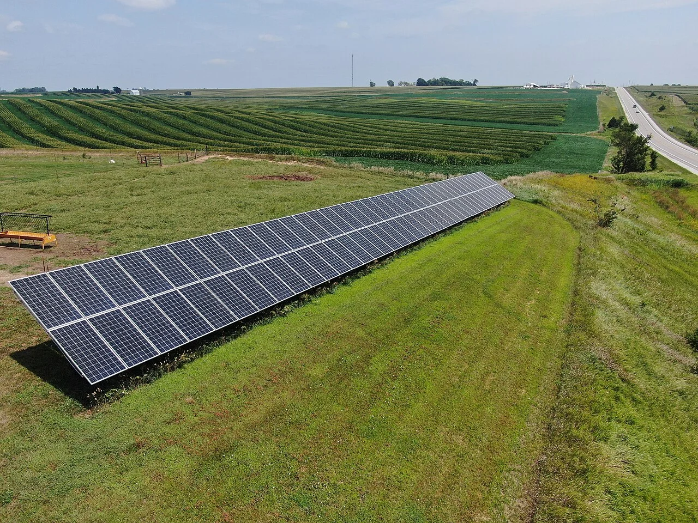

Making a home’s energy data useful.
Local appliance inference and a dashboard that turns household telemetry into decisions.

Microgrid ManagerContextual photograph, not the project installation. Photo credit ↗
The problem
A home with solar and batteries produces plenty of readings, but a homeowner needs to know which loads are running and what to do next. Our UCSC capstone focused on turning that telemetry into appliance estimates and understandable recommendations while keeping inference local.
How I approached it
As capstone lead engineer, I owned model development, physics-informed labeling and the dashboard, working with Dr. Pat Mantey and the AnyLog team on infrastructure. I replaced unreliable LLM labels after all 3,433 sampled heat-pump windows had been labeled OFF.
Kafka carries eGauge readings and MQTT brings in Solar Assistant telemetry. EdgeLake / AnyLog and PostgreSQL make the streams queryable. I trained per-panel BiLSTMs in PyTorch, exported them to ONNX and connected the outputs to FastAPI, React and Node.js dashboards.
I separated kitchen signals into sustained loads, compressor cycles, discrete events and paired pulses. Four-fold chronological evaluation and model-output contract checks helped expose weak labels and prevent silent appliance-name mismatches.
What changed
Delivered local inference across three panels and a usable residential monitoring dashboard. The capstone is recorded as completed in October 2026.
Restored a five-minute dashboard snapshot from zero to more than 1,800 readings by correcting a stale data-source reference. All 11 solar-path tests passed locally and inside the deployed inference container.
The project led to a co-authored LF Edge article on residential edge intelligence.
Our published LF Edge report describes single-digit milliseconds of CPU inference per panel, with appliance predictions written every 30 seconds.
Rule-derived evaluation is not independent appliance accuracy. Rare loads still need broader ground-truth coverage; fully automated appliance control was outside the completed capstone scope.
Read our LF Edge article ↗Engineering decisions
Model outputs are independent appliance probabilities, allowing multiple loads to be ON at once. Physics-informed rules add temporal and power constraints; ambiguous windows are excluded instead of forced into training labels.
A model deployment couples the ONNX graph with feature normalization, appliance names and thresholds. Checking those contracts prevents a numerically valid output vector from being interpreted against the wrong labels.
Kafka / MQTT → EdgeLake / AnyLog → PostgreSQL → ONNX + rules → FastAPI → dashboard. I kept the interface and inference layers separate so a GUI change did not create a second model runtime.